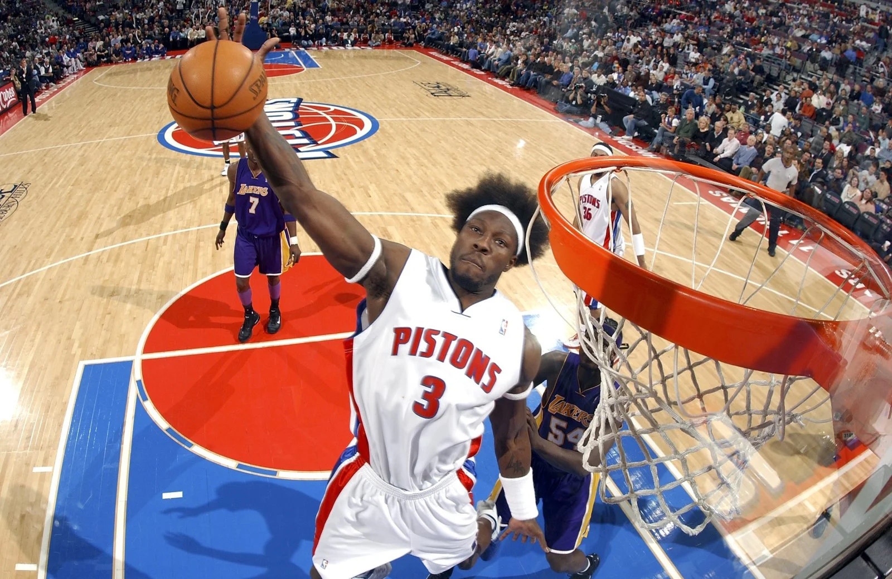
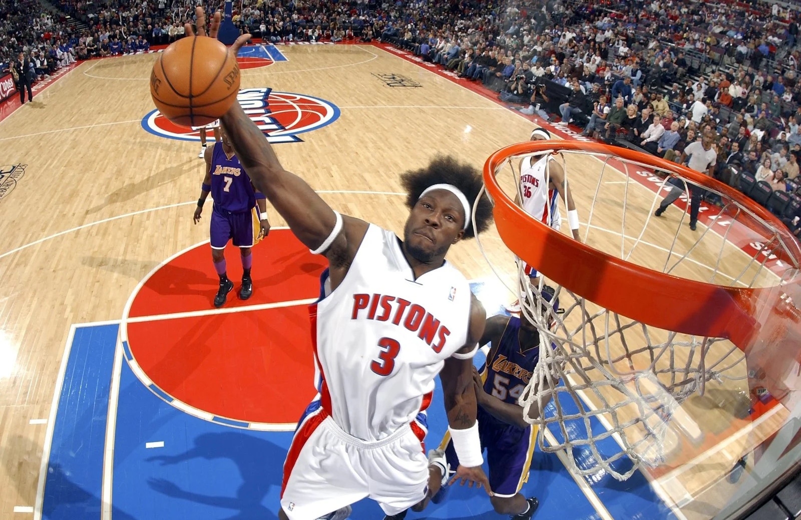

There have been many legendary players that have worn a Pistons uniform in the team's storied past. The franchise has retired nine players' numbers, meaning that those numbers can never be worn again by another player on the team. Chauncey Billups, Ben Wallace, Joe Dumars, Dennis Rodman, Isiah Thomas, Vinnie Johnson, Bob Lanier, Dave Bing, and Bill Laimbeer have all had their numbers retired by the team (Source: Fansided). These players were all instrumental in the success of the team and were extremely talented basketball players. To have a number retired is a big honor in professional sports.
In addition to players, the Pistons have also had some legendary coaches in their time. Chuck Daly led the Bad Boys teams to back-to-back championships in 1989 and 1990. He also has the number 2 retired in his honor. Larry Brown coached the team for 3 seasons, leading the pistons to their third championship in 2004. The Pistons have had other very successful coaches such as Rick Carlisle, Stan Van Gundy, and Dwane Casey.
 
